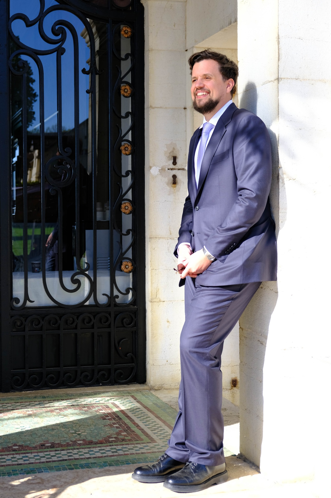

Deux experts, un verdict
Comment vérifier la qualité d'un contenu pédagogique produit par une IA, sans faire confiance au juge par défaut. Sur une école fictive, pas à pas.
Le recevoir à sa sortie ↗Head of Product hands-on · Produits IA · Paris · FR / EN
Un projet qui patine. Un budget à défendre. Une IA dont la valeur reste à prouver.
Je prends la responsabilité de produits IA, de la décision à l'adoption, et je mesure ce que l'IA apporte vraiment : la qualité que vos experts acceptent, l'effort humain complet, une équipe qui fait tourner le système sans moi.

01 Votre situation → ma contribution
Trois situations, trois façons de travailler ensemble. Chacune a une fin écrite : on sait dès le départ ce que vous aurez en main.
Une démo convaincante. Des gains difficiles à vérifier.
Une décision écrite : garder, corriger ou arrêter.
Ce qu'on mesure : la qualité que vos experts acceptent, le coût complet, le temps de relecture et de correction.
Responsabilité produit d'une chaîne de contenus pédagogiques générés par IA : grille de qualité construite avec les experts, analyse des consignes et des traces, décisions tracées de la vision au sprint.
Entre data scientists, développeurs et parfumeurs : faire passer des modèles de R&D à l'usage quotidien, avec une équipe de plus de 10 data scientists, développeurs et designers.
Des décisions qui calent entre le métier et la technique.
Une roadmap tenue, et un relais qui porte le rituel sans moi.
Ce qu'on suit : les décisions prises et tenues, les releases livrées, l'autonomie de l'équipe.
| Jalon | Date | Critère d'acceptation |
|---|---|---|
| M1 | 14 oct. | premier parcours publié et relu |
| M2 | 18 oct. | deux équipes sur le même rituel |
| M3 | 23 oct. | relais autonome sur un cycle |
Stratégie produit et coordination d'API de quatre équipes réparties entre la France et l'Allemagne, alignées dans un seul train SAFe, sur une plateforme de trading temps réel.
Head of Product de transition : passage d'une organisation en mode projet à une organisation produit, entre produit, marketing, design et tech.
Chacun utilise l'IA, chaque synthèse repart de zéro.
Une procédure écrite que l'équipe tient seule.
Ce qu'on mesure : le temps humain complet et les corrections, avant et après.
Portefeuille d'essais IA et IoT sur la malterie, la meunerie, la panification et la qualité, avec une stratégie de captation des données terrain.
Organisation produit construite de zéro chez La Fourche ; programme de réconciliation des données CRM chez ManoMano.
02 Méthode
Chaque affirmation porte son niveau de preuve. Chaque source a son registre. Aucun agent n'écrit dans vos outils sans un go humain.
Mesuré, constaté dans l'outil ou la donnée.
Selon une personne ou un document, pas encore vérifié.
Une proposition, avec le test qui la tranchera.
On ne sait pas encore, et on le dit.
Vérifier la consigne avant de générer
Confier au code les défauts mécaniques
Mesurer l'accord de deux experts
Réécrire la règle là où ils divergent
Calibrer un juge IA là où ils convergent
03 Ressources
Comment vérifier la qualité d'un contenu pédagogique produit par une IA, sans faire confiance au juge par défaut. Sur une école fictive, pas à pas.
Le recevoir à sa sortie ↗Qui décide ? Que livre-t-on ensuite ? Qu'a-t-on appris ? Que peuvent faire les agents ? Quatre modèles et un guide de huit pages.
Recevoir le kit ↗04 Contact
Trente minutes pour situer votre cas. Je vous dis laquelle des trois façons de travailler convient, ou aucune.